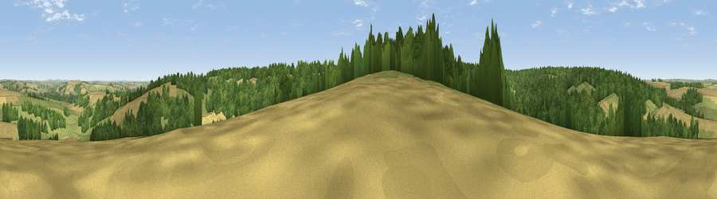

Viewpoint near Sherrington
#19877 in England · top 27% of its area beats it · near Sherrington · access?Where it is
The exact computed spot (ST 95125 36575). Click the marker for map links.
Public access: no public right of way or access land is recorded at this exact spot — it may be on private land. Computed from Natural England's CRoW access layer and OpenStreetMap rights of way — not the legal definitive map. Always verify locally.
The view, rendered

A 360° render of this exact spot computed from the terrain model, tree cover and land cover — summer colours, afternoon light, calibrated against photographs of famous viewpoints. Real trees, hedges and buildings will differ in detail.
The panorama
Grey silhouette: terrain skyline in each direction (720 bearings, Earth curvature and refraction included). Dashed green: skyline with trees (+15 m) and buildings (+8 m) as obstacles. Blue strip: how far the ground is visible on each bearing.
Where the view opens
Wedge length = distance to the farthest visible ground on that bearing (vegetation-aware). Rings at 10, 25 and 50 km.
What fills the view
46% woodland · 27% cropland · 27% grassland
Angular shares of the visible panorama (visual magnitude), not map area. Landscape diversity 0.47 (0–1 Shannon).
Key numbers
More beautiful places nearby
The staircase of upgrades: each row has a higher view potential than everything closer. Driving times are estimates from straight-line distance, calibrated against real road routing — check an actual route before setting out.
| Place | Direction | Drive | Score |
|---|---|---|---|
| Viewpoint near Codford | NE · 5 km | ~11 min | 60.2 |
| Viewpoint near Fonthill Gifford | SSW · 8 km | ~16 min | 64.2 |
| Haddon Hill | WSW · 9 km | ~18 min | 64.6 |
| Viewpoint near West Knoyle | WSW · 9 km | ~18 min | 66.4 |
| Viewpoint near Monkton Deverill | W · 11 km | ~20 min | 70.9 |
| Cley Hill | NW · 14 km | ~25 min | 76.8 |
| Viewpoint near Berwick St John | S · 16 km | ~28 min | 78.2 |
| Beacon Batch | WNW · 51 km | ~72 min | 79.4 |
51.12843, -2.07104 · source: screening · position refined by local search. Computed location — check access rights before visiting.